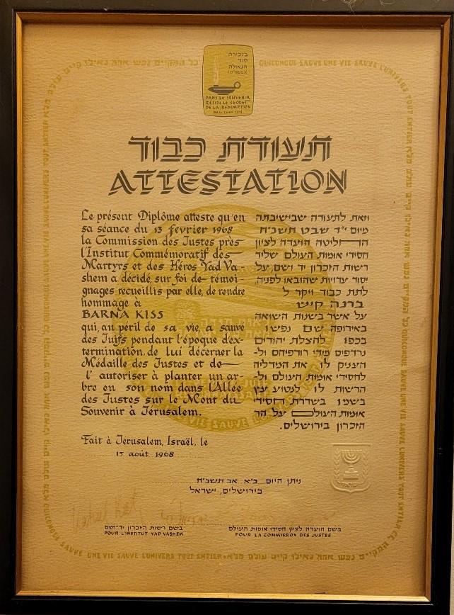

Sailing


Honors from West Chester Jewish Conference

War Hero

Smithsonian Holocaust Museum
Links
Here are some links to other sites that have more information about Barna Kiss.
New York Times Obituary
Hungarian Rescuer 1
Hungarian Rescuer 2
They did not say his name, but Barna is mentioned in the movie Shindler's List as the Hungarian Gentlemen.